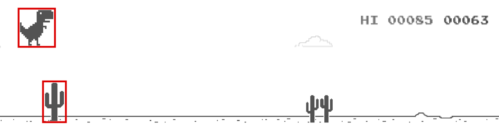

CS4040 · Unit 3: 2D Game Development
Per Wikipedia, “A hitbox is an invisible shape commonly used in video games for real-time collision detection. It is often a rectangle or cuboid that is attached to and follows a visible object, though circular or spheroidal shapes are also common.”
In Pygame, we have a rectangular hitbox around an Actor’s image, including any transparent space.

colliderect(): method called on one Actor to detect if there’s a collision with another Actor.True if there’s a collision, False otherwise.update() runs about 60 times per second.colliderect() is True every frame.player.money += 1 runs 60 times a second!game Objectgame stores information about your game’s state.gamegame # object that stores information about the game's state
game.state # str: "playing", "won", "lost", "over" or "paused"
game.score # int: starts at 0. Update it in your code.
game.level # int: starts at 1. Update it in your code.
game.timer # float: seconds since game started. Auto-updates.
game.frame_count # int: frames since game started. Auto-updates.game.timer only counts while the game is "playing".
"playing" → normal gameplay"won" → player won"lost" → player lost"over" → game is over (no difference between win/lose)"paused" → temporarily stoppedCheck using:
Update using: game.win(), game.lose(), game.over(), etc.
game.state to "won", "lost" or "over" and clears the clock.game.state is "playing". Once the game has ended, extra calls are ignored.While paused, game.timer and Sprite animations stop, but update() and the clock keep running.
Add a number to restart the game after that many seconds:
game.state and clears the clock.game is reset: score 0, level 1, timer 0, state "playing".start() function runs again.Note: because these are skipped unless game.state is "playing", it’s safe to call them in update() every frame. Only the first call schedules a restart.
game, then runs start() again.The rule: win(), lose() or over() to end the game. restart() to start a new one.
start()?start() runs when the game begins and again on every restart.game. Everything else is up to start().start(): Actor positions and your own variables.draw().def draw():
screen.clear()
# ... draw the actors and scene here, then the HUD on top
screen.draw.text(f"Score: {game.score}", midleft=(20, 20))
screen.draw.text(f"Time: {int(game.timer)}", center=(WIDTH // 2, 20))
screen.draw.text(f"Level: {game.level}", midright=(WIDTH - 20, 20))
if game.state == "lost":
screen.draw.text("Game over!", center=(WIDTH // 2, HEIGHT // 2))
if game.state == "won":
screen.draw.text("You won!", center=(WIDTH // 2, HEIGHT // 2))Check state in draw().
def draw():
screen.clear()
key.draw()
if game.state != "lost": # draw player if "playing" or "won"
player.draw()
if game.state != "won": # draw enemy if "playing" or "lost"
enemy.draw()
if game.state == "won":
screen.draw.text("You won!", midtop=(250, 20))
if game.state == "lost":
screen.draw.text("Game over", midtop=(250, 20))The first 2 lines prevent the rest of update() from running by returning if game.state is not "playing". Change state and trigger a restart with game.lose().